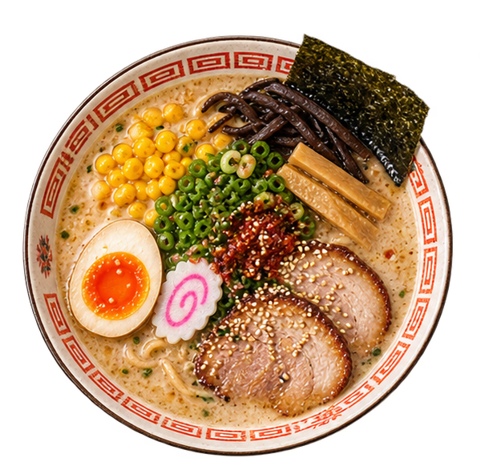
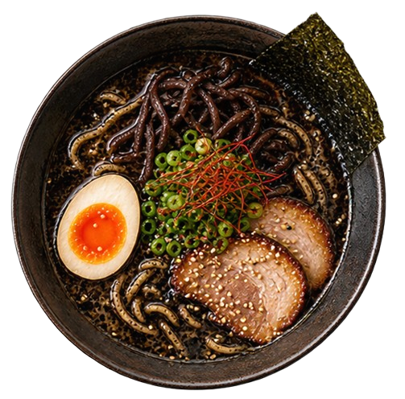
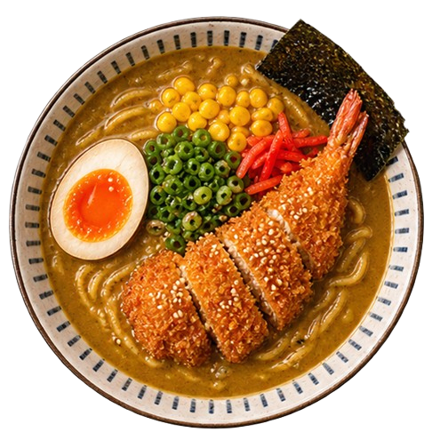

Carta

Chef's Special Ramen
Nuestro tazón insignia con triple caldo, cerdo asado a fuego lento durante 15 horas y toppings premium.
15,50€
Kuro Black Garlic Ramen
Caldo Tonkotsu enriquecido con aceite Mayu (ajo negro quemado artesanal), fideos finos, panceta Chashu glaseada, huevo ajitama marinado y brotes de bambú.
16,80€
Ebi Katsu Curry Ramen
Fusión de caldo aromático de curry japonés y dashi, coronado con langostinos crujientes rebozados en panko, cebolleta tierna y narutomaki.
13,20€Gyoza de Cerdo (5 uds)
Empanadillas japonesas tostadas a la plancha con salsa casera.
6,20€Tonkotsu Ramen
Caldo cremoso de cerdo cocinado durante 16 horas con fideos finos.
13,90€Miso Ramen
Con delicioso caldo tradicional de miso japonés y pollo marinado con noodles de huevo.
15,90€Creamy Vegan Ramen
Caldo de sésamo y miso blanco con tofu marinado y setas shiitake.
13,50€Cerveza Kirin
La cerveza mas vendida de Japón.
13,90€Cerveza Sapporo
Cerveza rubia japonesa, suave y refrescante.
3,50€Cerveza Kirin
La cerveza mas vendida de Japón.
13,90€Mochis Artesanales (2 uds)
Tradicional pastel de arroz relleno de té verde o chocolate.
4,50€